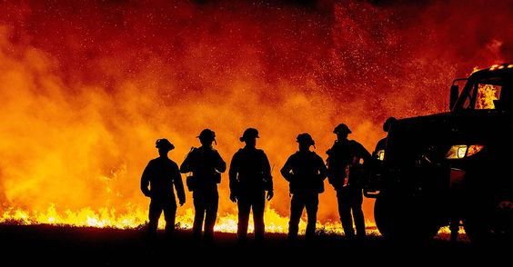

Wildfires leave behind a lot of ash
- Children, pregnant women, and people with asthma, or heart disease need to be especially careful about breathing in dust from ash.
- Protect yourself against ash when you clean up. Wear gloves, long-sleeved shirts, long pants, and shoes and socks to protect your skin. Wear goggles to protect your eyes.
- Children should not do any cleanup work.
- After a wildfire, private wells can be contaminated and unsafe to use for drinking water and other purposes.

Drive safely.
- Be alert for broken traffic lights and missing street signs.
- Watch out for trash and debris on the road.
Be careful around damaged buildings or structures.
Wait to return to buildings during daylight hours, when it is easier to avoid hazards, especially if the electricity is off and you have no lights.

Protect your emotional well-being.
After a wildfire, you may feel sad, mad, guilty, or numb. These are all normal reactions to stress. Talk to a psychologist, social worker, or professional counselor if you need help coping.